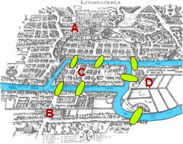
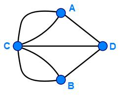

An Introduction to Network Analysis and Cytoscape for XML Coders
under construction
Home | About | Thalaba: 1801 edition | Place-Networks: Graphs and Slides | TEI to Network: A Cytoscape Tutorial
 Last modified:
Last modified:
Topics Covered in this Tutorial
- What is Network Analysis and Why Would XML Coders Want to Try it? And Why You Should Proceed with Caution!
- Why Try Cytoscape?
- How to Prepare Data for Import
- How to Import
- What to Do and See with Cytoscape's Network Analyzer
- Filtering Data and Preparing Multiple Visualizations
-
What is Network Analysis, and Why would XML Coders Want to Try it?
Networks are structures of linkages and interactions, and in studying them we attempt to organize relationships between things, considering how close or how distant things are from each other, or how centrally important something is. If we can plot a readable model of a network, we can make it possible to locate individual points that are highly important, and isolate areas that are vulnerable to influence. Plotting network models might help to predict the spread of a virus, or a breakdown in overloaded circuitry, or it might help to identify the most influential individuals in a royal court over two generations. In a network graph, particles (or "nodes") are plotted in a distinctly defined relationship ("edge," "bridge," "link," or "path") with respect to other nodes. Formalizing these relationships is a long history of mathematical theory, called "graph theory," dating back to the efforts of Leonhard Euler in 1736 to find a solution to a challenge posed by the seven bridges in the Prussian city of Königsberg:
The city had seven bridges crossing found landmasses (two islands in a river, and two areas on opposite banks). The question was, could a person walk through all parts of the city using all the bridges, but crossing each bridge only once during the walk? (No fair walking halfway onto a bridge and turning around, and then walking the other half at a later point: a pedestrian was to completely cross each bridge during the walk.) Could it be done without crossing any bridge twice?
Euler drew a diagram to simplify and study the problem: He converted each landmass to a point (or "vertex," or "node"), and turned the bridges into lines ("edges" or "paths"). In studying the problem he came up with mathematical theory known as the "Eulerian path" or "Eularian walk," which asserted conditions necessary for a networked system to be traversed by moving along each path only once. The seven bridges of Königsberg did not meet the conditions for a Eurerian walk, because for such a walk to exist, zero or two nodes must have an odd number of edges branching from them. The number of edges coming from a node determines its "degree", and each of the nodes (or landmasses of Königsberg) has an odd numbered degree (Node C has a degree of 5, while nodes A, B, and D have degrees of 3). Euler proved the walk was impossible for Konigsberg, but in so doing he set in motion the forms and calculations associated with graph theory as we know it today.
 Source (both images): All Math Words EncyclopediaNetwork graphs have become trendy in Digital Humanities research over the past decade, but humanities research sometimes ignores the mathematical "graph theory" or network statistics that have been taken more seriously in other fields, particularly in social sciences (where social network analyses plot relationships across demographics), and biological sciences (where networks are deployed to produce mathematically based predictive models in epidemiology and gene sequencing). Lacking a grounding in network statistics, or plotting overly complicated node and edge relationships can lead to distortion and misreading of the information defining the network, as Scott Weingart warns (see "Networks in Historical Research" in The Historian's Macroscope: Big Digital History, eds. S. Graham, I. Milligan, and S. Weingart (web view as seen 2014; print book to be produced in Oct. 2015).
I have introduced networks with Euler's "Seven Bridges of Königsberg" problem because it helps to to demonstrate that network graphs are essentially simpler forms designed to help visualize a set of relationships easily. Networks themselves are, more significantly, a set of data which can be read in tabular form as a chart defining nodes and edges. There are multiple ways to visualize this data, but the foundation is a set of relationships and some question(s) that you raise about them: What is connected to what? How many connections are there between points X and Y? How much information is exchanged between these two centers of activity? How many different ways can you reach point D from point A without going through Point B? Which node is most influential on the majority of nodes around it? Which nodes are necessary to hold a network together? How many isolated clusters (or "cliques") do I have in my data, and do I have multiple ("broken") networks or a single unified network?
A network graph, like any visualization tool, can produce a distorted summary. You shouldn't use a tool simply because you can or because it seems trendy, but do try a network analysis to plot clearly defined relationships. Though most network graphs are much more complicated to read than the Seven Cities graph, you can filter their data into meaningfully readable portions and style their nodes and edges to help a human reader navigate them. Another reason to try a network analysis is to learn to use and apply network theory as you're working with familiar data sets from your own projects. I learned much about a) network statistics, and at the same time, b) Robert Southey's references to places in Thalaba the Destroyer by working in Cytoscape.
Most people who work on network analyses are probably not XML coders, since most network analysis tutorials presume that one's data is plugged into rows and columns on a spreadsheet or is simply in plain text form. For most who apply network visualization tools, the "database" means a grid form. However, those of us in Digital Humanities who code in XML have created an alternative form of a database, with "nodes" in the form of XPath steps moving through sometimes deeply and sometimes shallow nested hierarchies. The topography of an XML database need not be flat to those of us who traverse it with XPath. XML text encoding often involves a combination of structural markup (of chapters, pages, paragraphs, line-groups, lines, etc.), contextual markup, and analytical markup (identifying linguistic features, motifs, proper names, dates, locations, etc). The combinations of our markup can be studied as networks of relationships, such as networks of co-occurence: Which proper names appear together (or "co-occur") most frequently in particular structural contexts, such as the unit stanza? While network analysis may not be the right tool for every digital humanities job, for coders of XML there may actually be many distinctly interesting ways to plot data from the same related set of files, a very rich field of opportunity. Reach into your nested XML data, and extract it in a plain text tabular (.tsv or .csv) file that looks like everyone else's data imports. And perhaps you can go back and extract more data, with different nodes and edges.)
-
Why Try Cytoscape?
Of the open-source network analysis tools available to digital humanists, including Gephi and Palladio, Cytoscape may not seem an obvious choice for beginners to the field, though much may be gained and quickly learned by those willing to explore and customize its many options. Cytoscape is widely used in the biological sciences to analyze complex exchanges of information at the molecular level, and its applications in biology and chemistry have encouraged optimization of Cytoscape’s network graphics, allowing for considerable fine-tuning helpful for projects in many fields. Within the software program, users have a potentially bewildering but impressively diverse range of options for weighting and styling edges, sizing and coloring nodes, fine-tuning the organization of a network graph and filtering it to produce many discreet views is highly optimized and dynamic within the Cytoscape software program. Though some of that fine-tuning may be lost in the effort to export graphs to the web, the Cytoscape programmers as well as independent web developers have been working to produce javascript-based exports of the dynamic plots built in the software. (For those interested in making dynamic network plots available for web view, there is a Cytoscape Javascript Library, which does not offer the same array of graphs (not as many graphs optimized for reading the full range of network statistics supported in th software version). One can easily export labelled static SVG, PNG, or JPG images from Cytoscape’s interface for use in slides or web-based projects.
With its Network Analyzer tool, Cytoscape is especially helpful for applying many kinds of network statistics, and this makes it especially effective for scholars in any field to study their data by plotting it according to various measures of centrality (betweenness centrality, closeness centrality, Eigenvector centrality) as well as to plot according to network path lengths to arrange one’s data in terms of network measures of “closeness” and "distance." Because Cytoscape offers so many options to visualize network data, its plots are an especially good way to learn and study network statistics as well as to export network graphs optimized for legibility.
Most users of Cytoscape work with flat, simple hierarchical databases of information, and import graph data from spreadsheets or simple tables with columns and rows. We who code in XML with its deep nesting apply our markup to generate usually a more complicated kind of database in the branching of our tree structures. We need to prepare our data for view in Cytoscape by performing an extraction of the data we wish to plot from our markup. Since network graphs can plot any kind of relationship involving a shared context of some kind, XML markup may be ideally suited for network plotting, since nested structures provide a basis for understanding shared contexts that form the edges in a network plot.
How to Prepare Data for Import
Consider, first of all, what phenomena in your text you want to network together as your nodes, and what produces a connection between them as your edges. In a social network analysis, that might involve a study of all the individuals in a text who are shown in conversation with each other at a given moment (or structural unit) of your text. In my “anti-social” network plot of Thalaba, I am studying how the places named and marked in my TEI text are networked together inside line-groups, whether in the lines of poetry or in prose annotations marked within the line-group. So my nodes are the places in the line-groups, and my edges are determined by the unit line-group, because position in a line-group marks a shared space or context for linkage.
Different network analysis tools (Gephi, Pajek, Cytoscape) require different ways to import data. (This is why, I think, most people tend to use a specific network analysis software package, or work within “R” which produces its own network plots). While Pajek (for example) requires its initial import data in two columns of nodes, Cytoscape requires data to be imported first in three main columns: Node Edge Node. That means that you’ll need to write a transformation in XQuery or XSLT to output in plain text a list of nodes, connecting points, and the node to which each is connected, with a separator of some kind. While Cytoscape (like other network software) accepts a range of import formats, the simplest and most reliable format I have found is a plain text file made of columns separated by tabs or commas, saved as .tsv (tab-separated format), or .csv (comma separated format). You could import this text into a spreadsheet program like Microsoft Excel, or any number of programs designed to recognize column layouts.
When writing your XQuery or XSLT to extract data, for Cytoscape import, I recommend outputting a file that includes more columns than you need for the first import, because you can reuse the table to data more than once. What kinds of data would you want to import? Think about how we mark our XML to hold information about structure, context, standard reference points, etc. Analyze your XML file and think about what makes nodes, and what relationships designate connecting edges (the lines between nodes). Does your XML hold information that will help to categorize your nodes a certain way? (For example, in my Thalaba project, I differentiate between “place” and "metaplace" to distinguish two different kinds of place noddes, and I indicate both what kind of structural unit holds an edge connection (a note or a main text entry), as well as each edge's specific Book and line-group by number.
Your first import to Cytoscape will only submit the node, edge, and node columns. You may import, in a second stage, the attribute information about your nodes and edges. In Cytoscape, information that describes qualities of particular nodes or edges is known as attribute data, and we can have node attributes and edge attributes. We can write XSLT or XQuery to output text arrayed in columns with a separator, knowing that we can import data in tab-separated or commma-separated columns. I prepare a single table containing all of my node data, node attribute data, edge data, edge attribute data, and connected node data and connected attribute data.
Here is a sampling of my data from the Thalaba project, isolating the node Yemen at Book 4 line-group 218. In the first line of the table, I have applied bold to highlight the most important network information: the location of node 1, the edge value, and the location of node 2. The bold information would be the minimum needed for import. The other words here are "attribute data," information that modifies a node (node attribute data) or an edge (edge attribute data):
Yemen place note B4_lg218 Earth_planet place
Yemen place note B4_lg218 the planet Venus metaplace
Yemen place note B4_lg218 Bagdad place
Yemen place note B4_lg218 Yemen place
Yemen place note B4_lg218 Mecca place
Yemen place note B4_lg218 Mecca place
Yemen place note B4_lg218 Bombay place
Yemen place note B4_lg218 Heaven metaplace
All of these lines indicate a single node, Yemen, and a set of edges pointing to other places and metaplaces mentioned in the same line-group with Yemen. You need a separate line to indicate each connection. (Generating this tab-separated text output is ideally suited for “pull” XSLT using xsl:for-each, or better yet, XQuery set to output plain text.)
- [To be continued: How to import: with screen captures.]